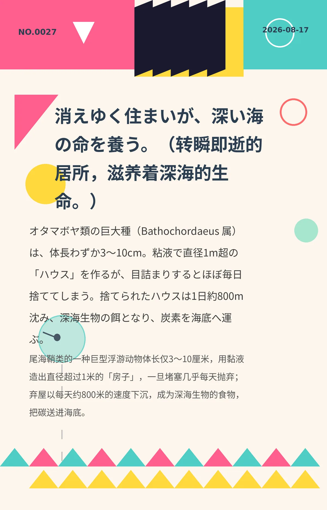

消えゆく住まいが、深い海の命を養う。（转瞬即逝的居所，滋养着深海的生命。）
オタマボヤ類の巨大種（Bathochordaeus 属）は、体長わずか3〜10cm。粘液で直径1m超の「ハウス」を作るが、目詰まりするとほぼ毎日捨ててしまう。捨てられたハウスは1日約800m沈み、深海生物の餌となり、炭素を海底へ運ぶ。（尾海鞘类的一种巨型浮游动物体长仅3～10厘米，用黏液造出直径超过1米的「房子」，一旦堵塞几乎每天抛弃；弃屋以每天约800米的速度下沉，成为深海生物的食物，把碳送进海底。）